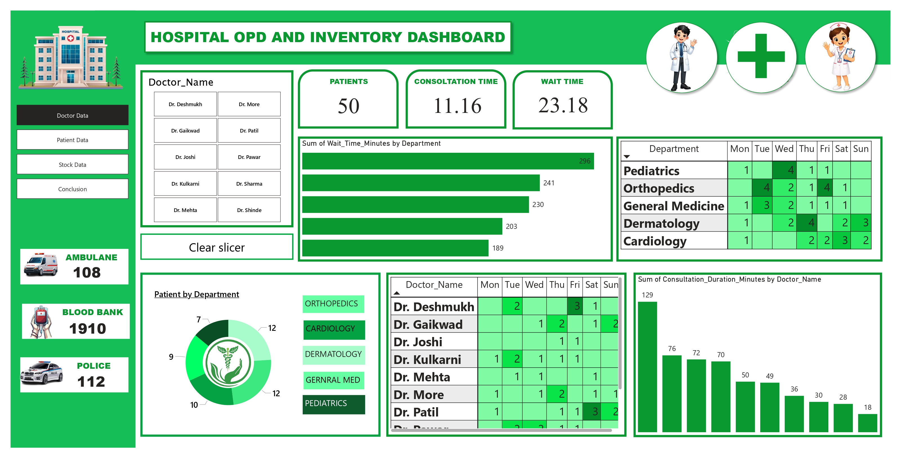
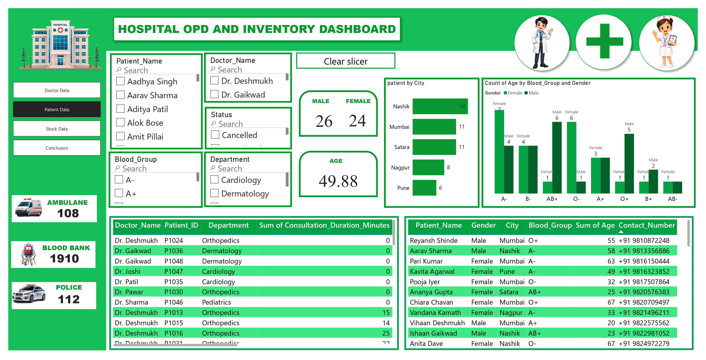
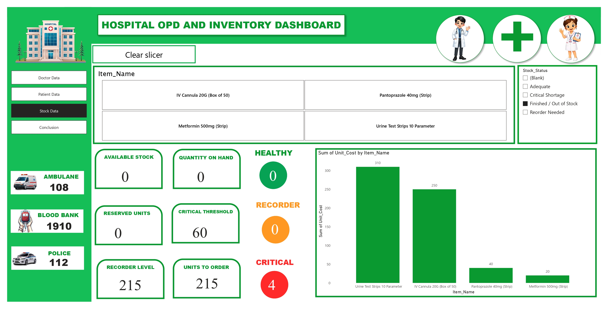
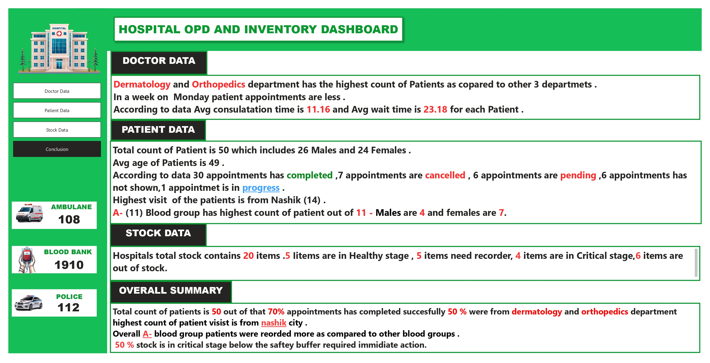
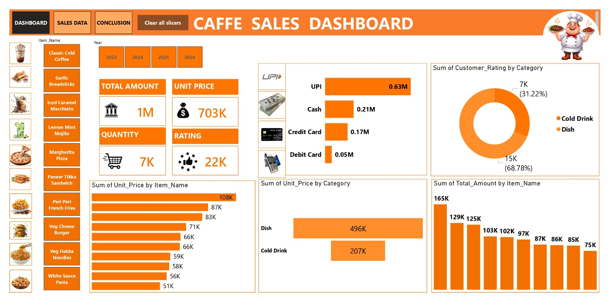
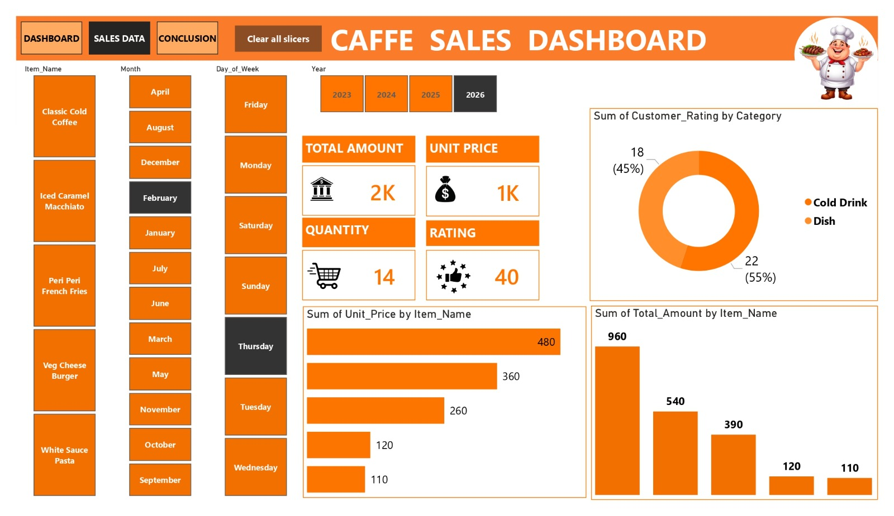
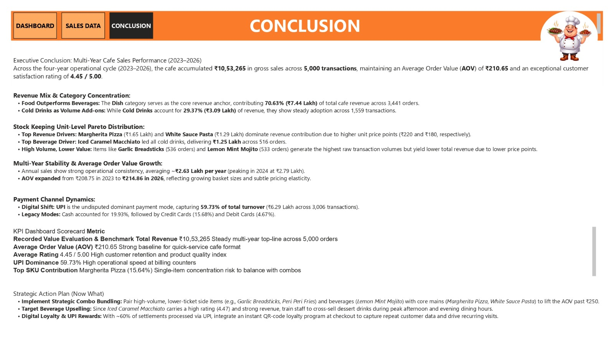

POWER BI DASHBOARDS
Power BI Dashboards
Explore my Power BI dashboards for hospital operations and inventory tracking.
Power BIHospitalInventory
04 · PROJECTS · POWER BI




POWER BI DASHBOARDS
Explore my Power BI dashboards for hospital operations and inventory tracking.



POWER BI DASHBOARD
Explore my Power BI dashboard for cafe sales.